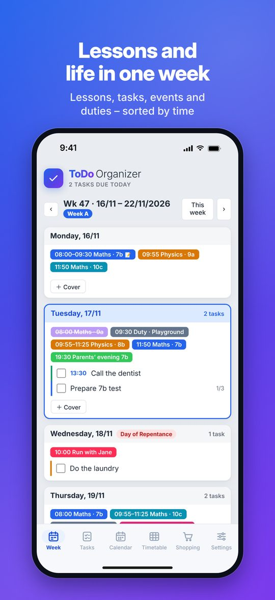
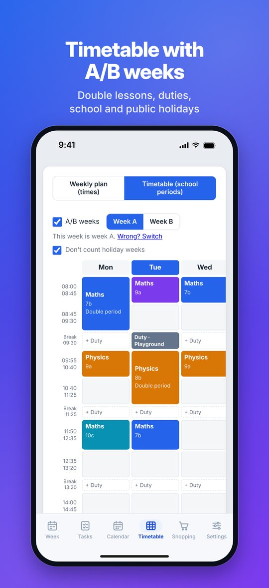
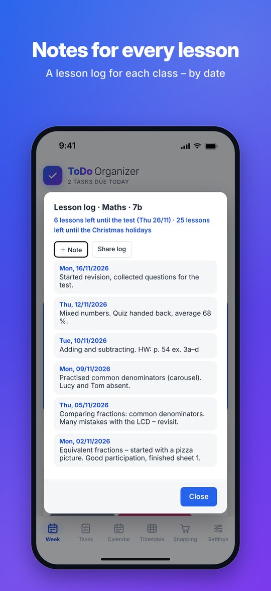
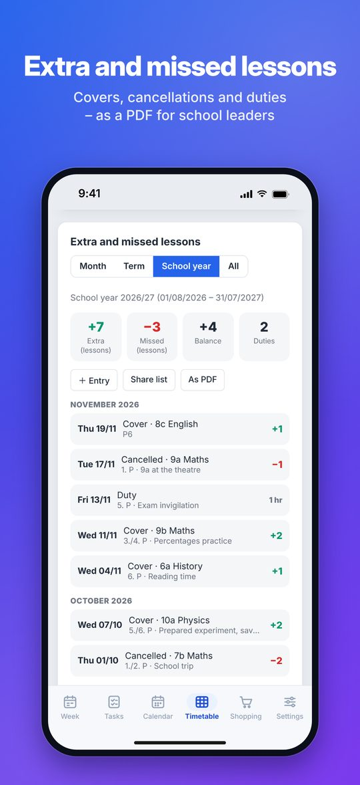
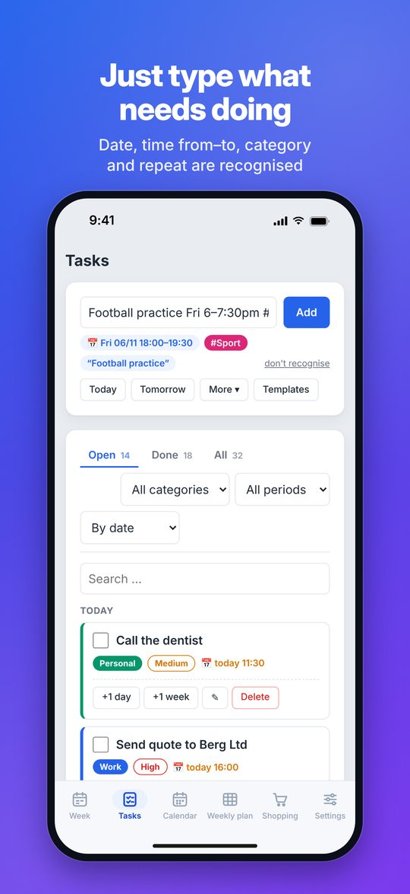
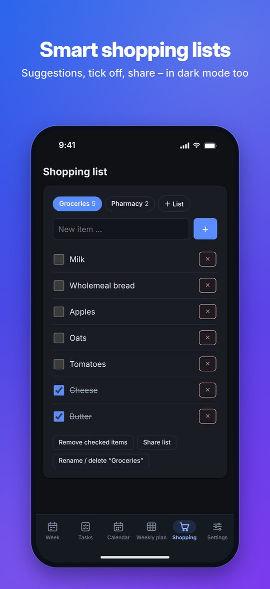

A real lesson planner for teachers
Timetable with holidays
School and public holidays for Germany, Austria and Switzerland are built in. A/B weeks, double periods and duties are included.
Notes for every lesson
Record what you covered and “note for the next lesson”. The lesson log for each class shows everything by date.
X lessons left until …
How many lessons are left until the test or the holidays? The app keeps count – cancellations included.
Extra and missed lessons
Log covers and cancellations in one tap, see the balance per school year, export a PDF for school leaders.
Plan tests
Prepare, write, hand back – the app creates the tasks. Homework “until the next lesson” of the class.
No pupil data
No names, no grades, no developer cloud. That keeps the app simple in terms of data protection, too.
And for everyone else
Just start typing
“Training Tue 6–7:30pm #Sport” – the app recognises date, time, category and repeat by itself. With Siri, too.
Week and calendar
Tasks, events from your calendars (Google too) and subscriptions from school or club in one view.
Family, studies, club
Suitable settings from the start: lectures, the children's appointments, training times and match days.
Habits and shopping
Weekly goals with streaks, shopping lists with suggestions – and a weekly review on Sundays.
Widget and shortcuts
Your day on the home screen, the number of due tasks on the icon, quick actions with a long press.
iPhone and iPad in sync
Sync via your own iCloud account – no third-party server.
Your data stays with you
No account, no ads, no analytics tools. Everything is stored on your device – and, if you like, in your own iCloud account. Backups can be encrypted.
Help and FAQ
Where is my data stored?
On your device. With iCloud sync turned on, also in your iCloud account at Apple. There is no developer server. Back up regularly under Settings → Backup; the app reminds you and, if you like, creates a backup itself every week.
How do I move to a new device?
With iCloud sync: turn it on on both devices, done. Otherwise: export on the old device, bring the file to the new one and import it there under Settings → Backup → Import.
What happens after the trial?
Tasks stay free – with quick entry, times, reminders, repeats, subtasks and notes, plus school and public holidays. Calendar, timetable with all school features, habits, shopping lists, iCloud sync and statistics are unlocked by the full version – a one-time purchase, no subscription, with Family Sharing. Your entries are always kept.
How do I switch the language?
The app follows your device language (German or English). To change it: Settings → “Sprache · Language”.
How do holidays get into the app?
Settings → Public and school holidays → choose your state or canton. The data for Germany, Austria and Switzerland is included in the app (source: OpenHolidays API, licence ODbL) – nothing is fetched from the internet, no guarantee.
How do I add my Google Calendar?
Settings → Connect calendars → “Add Google Calendar”. The app guides you step by step through both ways: via the device (recommended) or as a subscription with the secret iCal address.
How do I use Siri?
“Hey Siri, new task in ToDo Organizer” – Siri asks for the text; date and time are recognised. “Hey Siri, what's on today in ToDo Organizer?” reads out your day. Both are also available in the Shortcuts app.
I have already bought the full version.
Settings → Full version → “Restore purchases”. This also works with Family Sharing.
Reminders don't arrive or arrive late.
iPhone/iPad: Settings → Notifications → ToDo Organizer → Allow Notifications.
Questions, bugs, ideas: smaehlmann.appdev@gmail.com